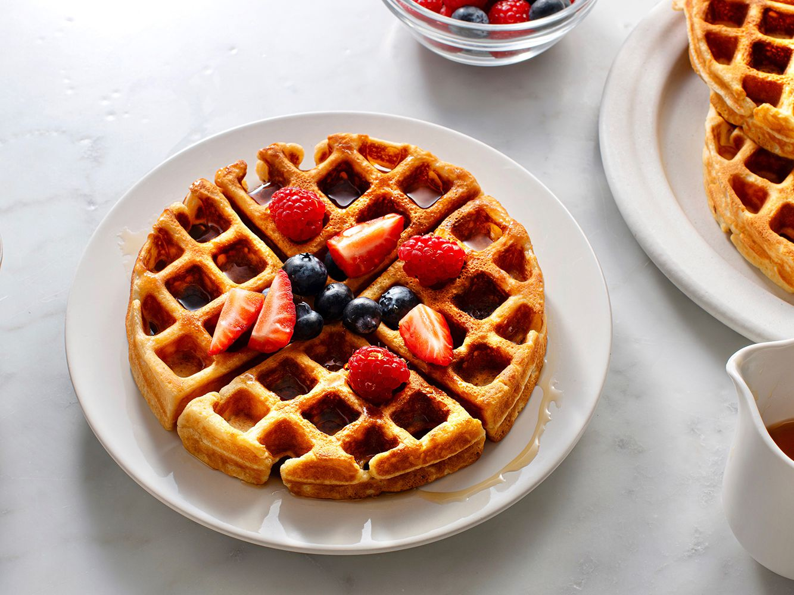

Delicious Homemade Waffles

Follow along to learn how to make some delicious homemade belgian waffles ;)
Ingredients
- 2 cups (255 grams) all purpose flour
- 4 tablespoons (50 grams) granulated sugar
- 1 tablespoon (12 grams) baking powder
- 1/4 teaspoon kosher salt
- 2 large large eggs
- 6 tablespoons (85 grams) unsalted butter, melted, cooled slightly
- 1 3/4 cups (414 milliliters) milk
- 1/2 teaspoons vanilla extract
- cooking spray
Steps
- Preheat the waffle griddle. If you plan to hold batches and serve all at once, preheat an oven to 200 F. In a large mixing bowl, combine the flour, sugar, baking powder, and salt. Whisk to blend the dry ingredients thoroughly.
- In another bowl, whisk the eggs. Add the melted butter and whisk until the mixture is smooth, then whisk in the milk and vanilla.
- Pour the milk and egg mixture into the mixing bowl with the dry ingredients and whisk until combined. Let the batter stand for 5 to 10 minutes.
- Lightly coat the interior waffle grid with cooking spray if recommended by the manufacturer. Fill the preheated waffle iron with the manufacturer's recommended amount of batter. Close the waffle iron lid and cook the waffle for the recommended amount of time (usually around 4 minutes). If desired, place cooked waffles on a rack in the preheated 200 F oven to keep warm while making subsequent batches.
- Serve the waffles with butter and syrup, jam, or fruit.
Enjoy!